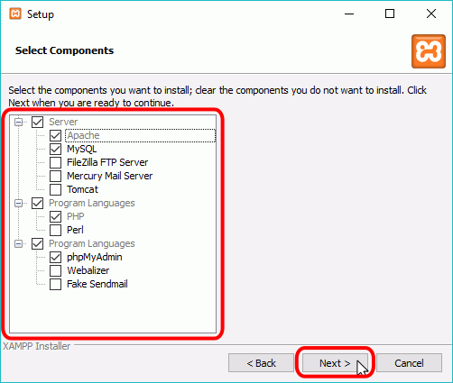
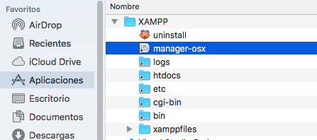
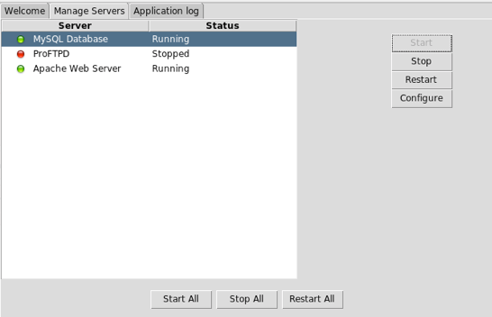
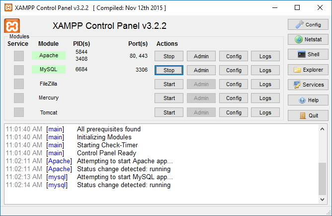

PHP es un lenguaje de desarrollo web en el lado del servidor. De hecho, es el lenguaje de desarrollo web en el lado del servidor más ampliamente utilizado a día de hoy, y aproximadamente el 80% de las páginas que podamos encontrar en Internet lo utilizan. De ahí la importancia de conocerlo y saberlo utilizar.
1. Características principales de PHP
PHP es un lenguaje de script del lado del servidor. Un lenguaje de script es básicamente un lenguaje de programación interpretado o ejecutado “al vuelo”. Es similar a otros lenguajes de script en el lado del servidor, como JSP o ASP.NET.
Además, PHP es un lenguaje multiparadigma. Podemos desarrollar aplicaciones siguiendo el paradigma estructurado (bucles y condiciones), modular (funciones) y orientado a objetos. Tiene una sintaxis bastante particular, y diferente a muchos otros lenguajes. Como lenguaje de servidor, a menudo lo utilizaremos intercalado dentro del contenido de una página HTML.
Podemos encontrar gran variedad de sitios web realizados con PHP: tiendas virtuales en las que poder crearnos un carro de la compra y pagar sobre una plataforma de pago de una entidad bancaria, cursos virtuales en plataformas Moodle (CMS hecho en PHP), o páginas web más o menos complejas realizadas directamente en PHP, o con algún gestor de contenidos en PHP como Wordpress o Joomla.
Entre sus principales características, aparte de su popularidad, podemos citar las siguientes:
- Es open source, por lo que podemos acceder a su código y usarlo, modificarlo o distribuirlo.
- Fácil de aprender, si se compara con otros lenguajes de programación como C o Perl.
- Multiplataforma, se puede ejecutar en diversos sistemas operativos. Esta es una diferencia importante con otras tecnologías como .NET (exclusiva de Windows), aunque hay otros lenguajes de servidor que también son multiplataforma, como Java/JSP.
- Permite acceder a diversos sistemas de bases de datos (MySQL, Oracle, PostgreSQL…)
- Admite diversas librerías y entornos para implementar sistemas de comercio electrónico, envío de e-mails, frameworks de desarrollo, etc.
2. Recursos necesarios para trabajar con PHP
Para poder trabajar con PHP necesitamos un servidor web que dé soporte a este lenguaje. Un servidor web es una herramienta que permite escuchar peticiones (locales o remotas) que llegan a un puerto del ordenador (normalmente el puerto 80, que es el puerto por defecto), y las procesa mediante algún recurso interno (en nuestro caso, las páginas PHP que alojaremos en dicho servidor), para ofrecer una respuesta a dicha petición. Por ejemplo, podemos solicitar un listado de libros de una base de datos, y en este caso la página PHP que reciba la petición deberá encargarse de conectar a la base de datos, obtener el listado y enviarlo a quien realizó la petición (cliente) en el formato esperado.
Existen varios servidores web que podemos utilizar para trabajar con PHP, siendo los más populares Apache y Nginx. Además, necesitaremos instalar el propio lenguaje PHP, y normalmente será necesario acceder a algún tipo de base de datos.
2.1 Utilizando XAMPP
Para aunar estos tres problemas (servidor web, PHP y base de datos) en una única solución, una alternativa bastante habitual consiste en instalar una herramienta llamada XAMPP. Este software incorpora:
- Servidor web Apache
- Servidor de base de datos MySQL
- Lenguaje PHP
Una de las ventajas que ofrecen es que, además de instalar Apache, PHP y MySQL y dejarlo todo integrado, nos proporciona un cliente web llamado phpMyAdmin para poder administrar las bases de datos desde Apache. Esto nos vendrá bien para crear o importar las bases desde una interfaz gráfica.
En cuanto a la versión requerida, depende un poco del tipo de aplicaciones que queramos desarrollar. Podemos descargar la última versión disponible desde la web oficial e instalarla dependiendo de nuestro sistema operativo.
Linux
En el caso de Linux, debemos dar permisos de ejecución y ejecutar el archivo .run que descarguemos desde algún terminal, con permisos de administrador (sudo). Suponiendo que el archivo se llame xampp-linux-x64-8.1.2-installer.run, por ejemplo, los pasos son los siguientes (desde la carpeta donde lo hemos descargado):
sudo chmod +x xampp-linux-x64-8.1.2-installer.run
sudo ./xampp-linux-x64-8.1.2-installer.runWindows y MacOSX
En el caso de Windows o Mac OSX simplemente hay que lanzar el instalador y seguir los pasos, eligiendo las opciones que nos interese instalar (al menos, Apache, MySQL y PHP), si nos dan a elegir. Así es como podemos dejarlo en el caso de Windows, por ejemplo:

El manager de XAMPP
XAMPP proporciona una herramienta manager o panel de control que nos permite gestionar en todo momento los servicios activos.
En el caso de Linux se encuentra en /opt/lampp/manager-linux-x64.run. Podemos acceder a la carpeta desde el terminal para ejecutarlo (con permisos de superusuario), o bien crear algún acceso directo en otra ubicación que nos resulte más cómoda.
En el caso de Windows, dicho manager está en la carpeta de instalación (típicamente C:\xampp), en un archivo llamado xampp-control.exe, que podemos ejecutar. En el caso de Mac OSX, se habrá creado un acceso en la sección de Aplicaciones para poder poner en marcha este manager.

El manager nos permitirá lanzar o detener cada servidor. Para las pruebas que haremos deberemos tener iniciados tanto Apache como MySQL. En Linux y Mac OS X tendrá una apariencia como ésta aproximadamente:

En el caso de Windows la apariencia es algo diferente, aunque igualmente funcional:

Por defecto, Apache estará escuchando en el puerto 80 (o 443 para conexiones SSL), y MySQL en el 3306. Podemos modificar estos puertos en los respectivos archivos de configuración (“httpd.conf” y “my.cnf”), dentro de las carpetas de la instalación de XAMPP (la ubicación concreta de estos archivos varía entre versiones y entre sistemas operativos).
IMPORTANTE: en el caso de Windows, es posible que tengamos que dar permisos de Control total al archivo xampp-control.ini, que se creará en la carpeta de instalación de XAMPP la primera vez que ejecutemos el manager. Esto deberá hacerse para evitar el mensaje de error que puede aparecer al intentar acceder a ese archivo sin permisos por parte de la aplicación.
Ubicación de las webs
La carpeta por defecto donde debemos ubicar nuestras webs es la subcarpeta htdocs dentro de la carpeta de instalación de XAMPP (típicamente C:\xampp en Windows, u /opt/lampp en Linux). Ahí deberemos colocar las páginas y carpetas que necesitemos, incluso podemos crear una carpeta para cada aplicación.
En realidad, podemos configurar Apache para admitir otras rutas distintas, y alojar así nuestros distintos proyectos en diversas carpetas a nuestra elección. Pero esto queda fuera del alcance de este curso, así que los ejemplos y ejercicios que probaremos los crearemos en carpetas independientes dentro de la carpeta por defecto.
Descarga e instala XAMPP en tu ordenador. Abre el manager y pon en marcha Apache y MySQL para comprobar que arrancan satisfactoriamente. Intenta acceder a la página de inicio (típicamente http://localhost, si no has tenido que cambiar el puerto por defecto).
Después, crea la carpeta prueba dentro de la carpeta htdocs y añade dentro un archivo index.html con un mensaje de bienvenida. Prueba a acceder a dicha página (con Apache en marcha) accediendo a http://localhost/prueba/index.html.
3. Mi primer programa PHP
Como comentábamos antes, PHP es un lenguaje con una sintaxis bastante particular. Normalmente los archivos tienen extensión .php (aunque más adelante veremos que hay otras alternativas), y dentro de ellos, el código comienza con la expresión <?php. Todo lo que esté englobado entre esta expresión y la de cierre ?> es código PHP, y podemos intercalar tantos bloques de este tipo como queramos en nuestras páginas.
Por ejemplo, esta página bienvenida.php carga un contenido HTML y, en medio, define un fragmento de código con un texto de bienvenida que muestra por pantalla:
<!DOCTYPE html>
<html lang="es">
<head>
<meta charset="UTF-8">
<title></title>
</head>
<body>
<h1>Página de bienvenida</h1>
<?php
echo "<p>Bienvenido a esta página</p>";
?>
</body>
</html>En la misma carpeta htdocs/prueba del ejercicio anterior, crea una página llamada informacion.php y, utilizando la instrucción echo de PHP que hemos visto en el ejemplo anterior, muestra algo de información sobre tí, generando algunos párrafos con formato HTML: nombre, aficiones, estudios, etc. Prueba a cargar la página (con el servidor Apache en marcha) y comprueba que el contenido se genera con el formato esperado.
3.1. Esquema de funcionamiento general
¿Cómo hace un servidor web como Apache para, a través de PHP, procesar una petición y generar un contenido para el cliente? Los pasos que se siguen son:
- El cliente realiza una petición de un recurso PHP. Típicamente consiste en solicitar una página PHP desde el navegador, a través de un enlace o formulario. Por ejemplo, un formulario que envía sus datos a pagina.php
- El servidor recibe la petición, toma el archivo pagina.php y lo interpreta, es decir, lanza el intérprete PHP para ejecutar el código PHP de la página
- Se sustituye el código PHP ejecutado por el código HTML que se ha generado en su lugar
- Se envía el código HTML generado como respuesta al cliente.
Por ejemplo, al recibir una petición a la página bienvenida.php del ejemplo anterior, se lanza el intérprete PHP y se genera el siguiente contenido HTML como resultado, que es lo que se devuelve al navegador:
<!DOCTYPE html>
<html lang="es">
<head>
<meta charset="UTF-8">
<title></title>
</head>
<body>
<h1>Página de bienvenida</h1>
<p>Bienvenido a esta página</p>
</body>
</html>Como podemos ver e imaginar, en el navegador NO se puede ver el código PHP del servidor, ya que éste ha sido procesado, interpretado y sustituido por el HTML correspondiente en el servidor.